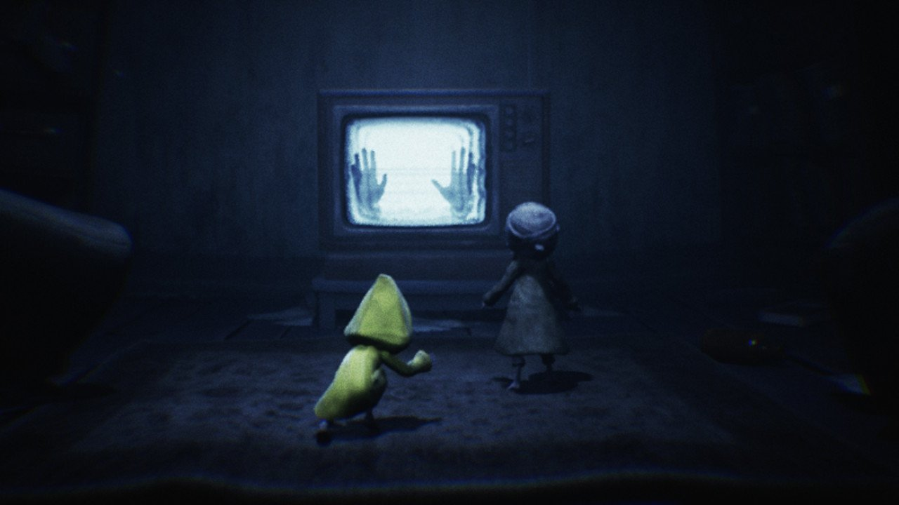
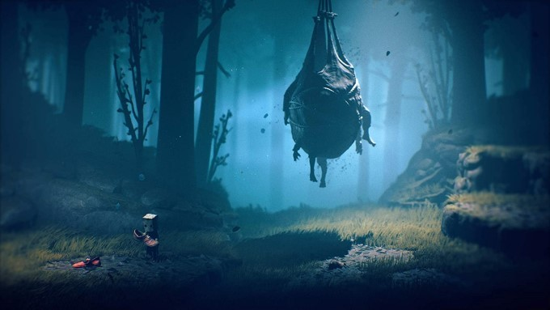
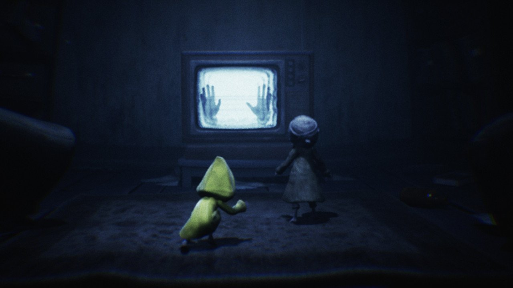
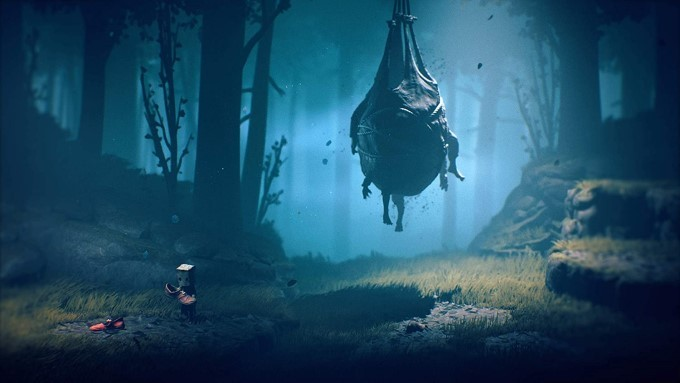

Little Nightmares II est un jeu vidéo de plates-formes et de réfléxion développé par Tarsier Studios, qui est sorti le 11 février 2021 sur Windows, PS5, Xbox One et Nintendo Switch. C'est aussi un jeu d’aventure horrifique où l’on incarne Mono, un garçon masqué par un sac en papier, accompagné de Six (l’héroïne du premier opus). Ensemble, ils doivent survivre dans un monde cauchemardesque rempli d’adultes monstrueux et découvrir les secrets d’une mystérieuse Tour Noire. Le jeu a eu une note de 8,5/10 sur Destructoid, 4/5 sur GamesRadar+, 14/20 (PC, ONE, PS4) et 13/20 (switch) sur Jeuxvideo.com.
Voici les personnages principaux:

Six (A hungry child) est un personnage androgyne beaucoup plus petit que les personnages adultes du jeu, faisant à peine le quart de leur taille avec des membres extrêmement minces. Sa morphologie est similaire à celles des autres enfants de l'Antre.
Mono est le protagoniste de Little Nightmares II. Il traverse la Ville Pâle aux côtés de Six.
Si vous voulez en savoir plus vous pouvez regarder les images et le trailer du jeu
Voici quelques images du jeu:
 



Si vous voulez voir des fanart sur le jeu
Voici quelques fanart du jeu:
Voici le trailer du jeu :
Si vous voulez acheter le jeu cliquez sur les liens si-dessous